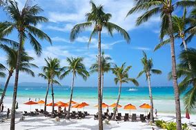
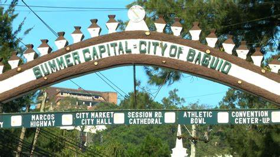

Boracay Island, one of the top beaches in the Philippines and one of the best Visayas tourist
spots,is blessed with a long stretch of powdery white sand beach (called White Beach), crystal
clear
and azure waters, and a stunning sunset.The island doesn’t fall short on adventures and
activities
for people of all ages.
Day 2: Exloring Baguio City
Date: September 18, 2023

Baguio City has been regarded as the Summer Capital of the Philippines. Baguio City is
also
considered a
prime tourist
destination in the Philippines, for good reasons.
Day 3:Sight Seeing in Mayon Volcano, Albay City
Date: September 30, 2023
The most active volcano in the Philippines is well known for its perfect cone
shape—which actually
signals how dangerous
the volcano can be. Its geology and location could soon combine in explosive, and deadly,
fashion.